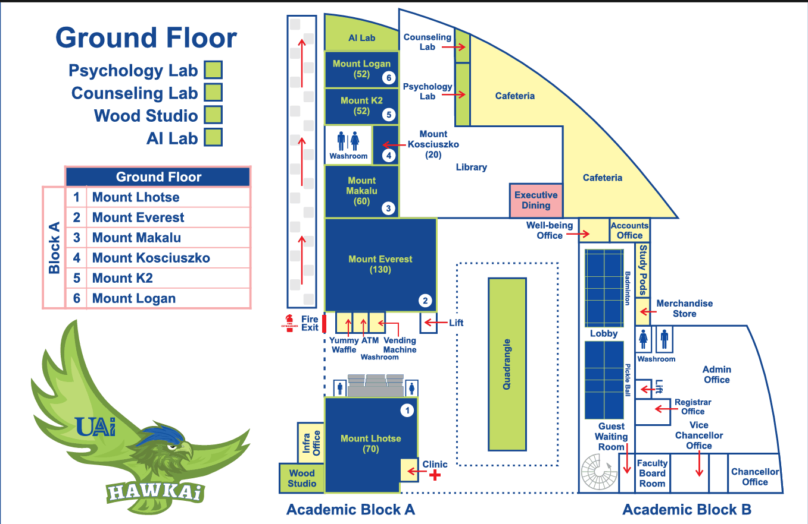

Indoor node editor
Open JSON
Open image
Download JSON
Tool
Select / move
Add dot
Add line
Add corridor
Click a dot or line to edit it. Drag a dot to move it.
show ids
show metres
zoom
Links to the outdoor map
An indoor exit joined to an outdoor dot id from geojson.io. Without a link, A* can't go in or out at that door.
+ Add link
Floor
plan mode (dots in metres on the architect's plan)
plan scale (pixels per metre of the plan picture)
status
plan
draft
confirmed
floor number
image file name (what the app loads)
Checks
Plan pixels:
-
